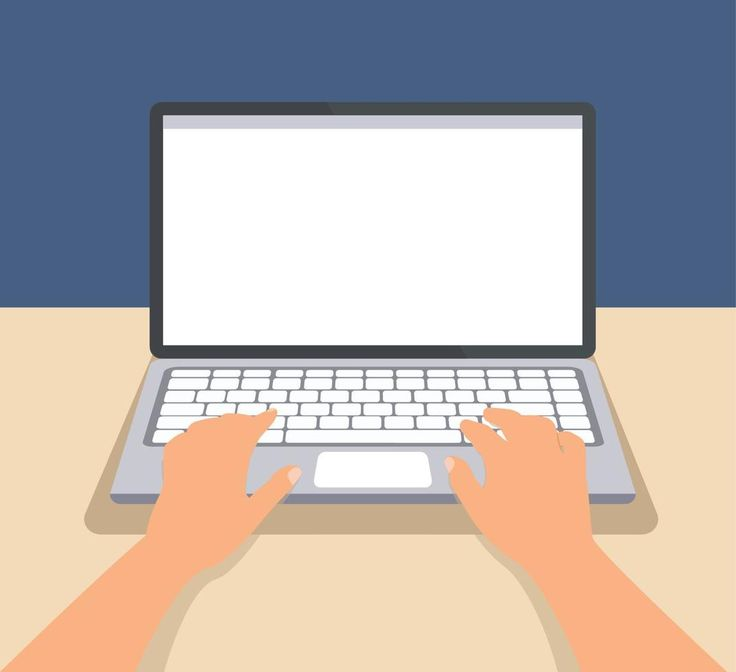
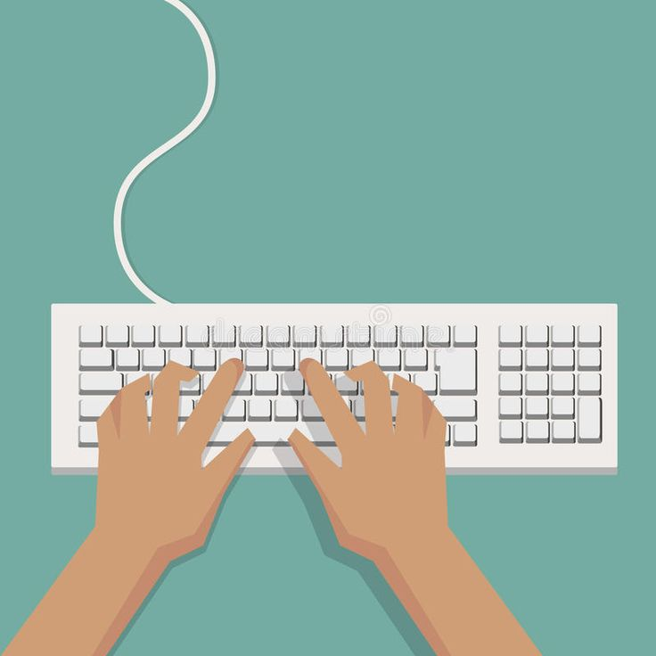
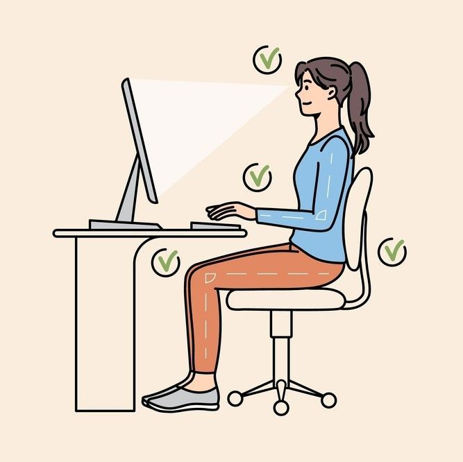
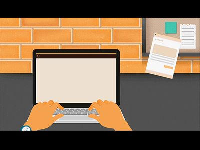

Finger movements
Do not look at the keys or the keyboard while you type: instead, remember
to slide your fingers until they find the home row thanks to the markings.
Only make the necessary movements to strike a specific key: no more, no less.
To increase your typing speed, keep your fingers and hands close to the home row position.
This will also limit strain on your hands. Keep in mind that your ring fingers
and pinky fingers are much less developed than your other fingers.

Typing position on the home row
Gently curve your fingers and position them on the middle row
of the keyboard. For most standard layouts, this "home row" consists
of the ASDF keys for your left hand and the JKL; keys for your right.
This row is crucial because it's where your fingers should rest as a
starting point and where they should always return after striking other
keys. Notice the F and J keys; they are typically equipped with a small,
raised bump. This tactile feature allows you to locate these
important index finger positions without needing to look down at
the keyboard, helping you maintain focus on the screen.

Prefer a seated position
Make sure to keep your back straight.
Your elbows should be bent at the correct angle.
Tilt your head slightly to face the screen.
Maintain a distance of 45 to 70 cm (approximately 18 to 28 inches) between your eyes and your screen.
Avoid any tension in the muscles of your shoulder, arm, and wrist.
Your wrists can rest on the space in front of the keyboard,
but never shift your weight by resting on them.

Keystroke speed
When you're starting out, don't try to go too fast. Speed up once your fingers have developed good habits.
You will get faster over time: to avoid errors, don't rush.
When you read the text, always be a word or two ahead.
If you're having trouble typing, use the keyboard test to determine if it's a software or hardware issue.
If you want to exceed the average typing speed, follow all the available courses on Ratatype.